The Fable - Bakery / Restaurante
We Are Known For Great Nigerian Cooking
Discover Story
- We are proud to be an active part of the Lekki community.
Through various initiatives, we support local causes,
contribute to charitable events, and collaborate with neighboring businesses.
It’s our way of giving back to the community that has embraced us so warmly.
Your Feedback Matters.
The experiences of our guests shape our journey.
We value your feedback and continually strive to improve.
Feel free to share your thoughts with us, either in person or through our online channels.
Your insights help us grow and enhance the Fable experience.
Thank you for being a part of our story.
We look forward to serving you and creating many more delightful moments together.
Bon Appétit!
David
Founder & Owner, The Fable.
APPETIZERS:
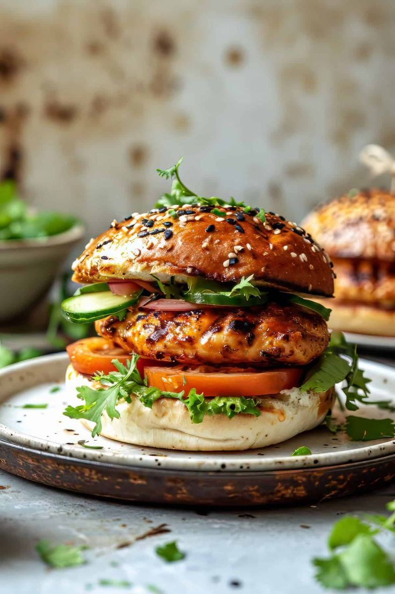
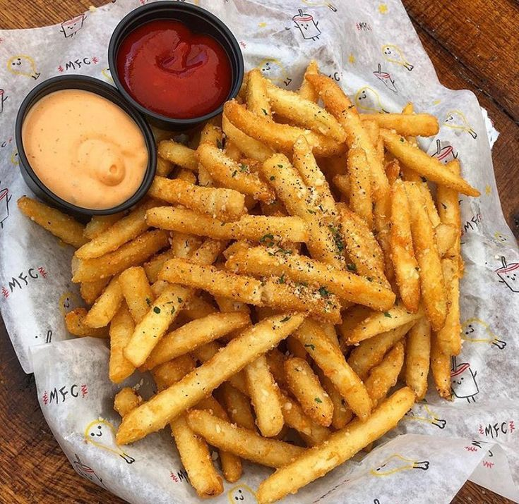
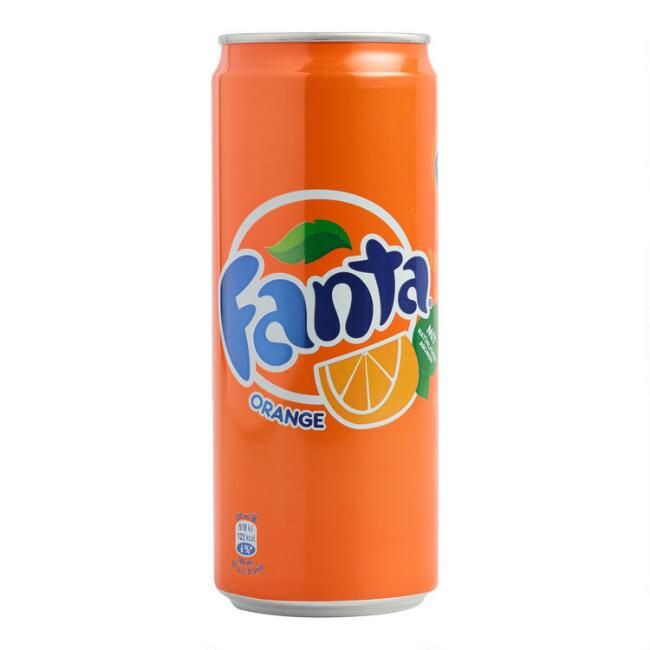
Crunch Chicken Burger
- Our Single Patty crunchy chicken Burger with cheese, tomato, cucumber, lettuce and
caramelized onions topped with lettuce, tomatoes and spicy mayo are super crispy.
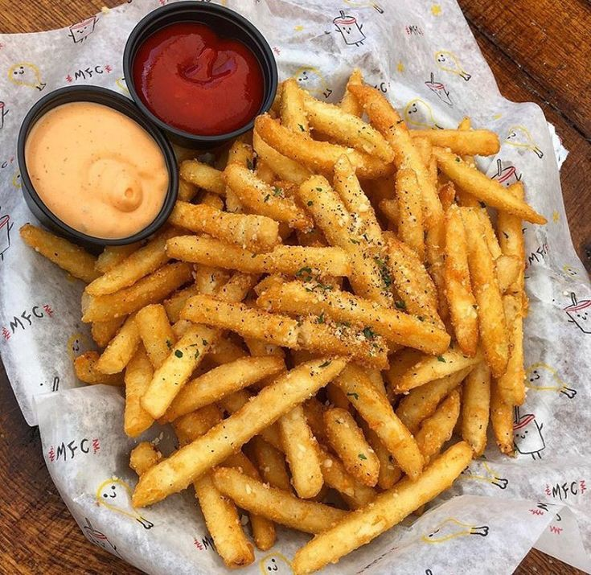
caramelized onions topped with lettuce, tomatoes and spicy mayo are super crispy.
French Fries
- Crispy, Tasty, and Healthy.
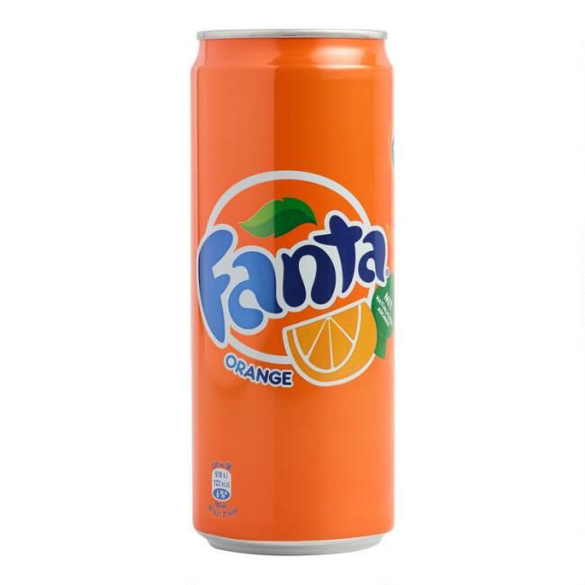
Fanta 50cl
- Fanta is an orange refreshing drink to enjoy with burgers and share with friends & family!
Meat Pie
- The meat pie is beef, pork, and potato all nicely spiced and baked together.
It's yummy and pretty easy to make too! It's best served fresh,
but you can also make it ahead and freeze or refrigerate it.
Serve the pie by itself or with a beef gravy.
It's yummy and pretty easy to make too! It's best served fresh,
but you can also make it ahead and freeze or refrigerate it.
Serve the pie by itself or with a beef gravy.
MAIN COURSES:

Jollof Rice
Category: Dinner, Lunch
Cuisine: Nigerian Cuisine
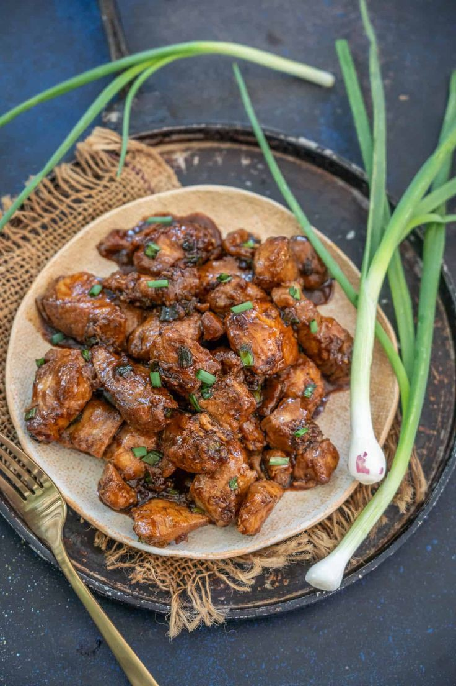
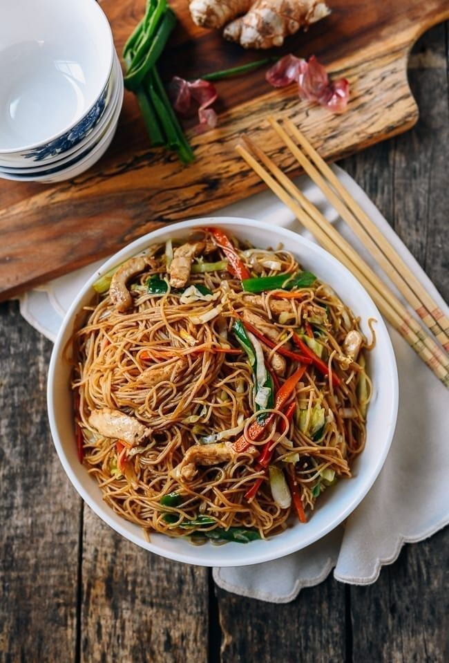
Jollof Rice
- Jollof rice is a beloved West African dish known for its vibrant red color and rich, savory flavor.
It’s a one-pot meal made primarily from rice, tomatoes, onions, and a variety of spices.
Category: Dinner, LunchIt’s a one-pot meal made primarily from rice, tomatoes, onions, and a variety of spices.
Cuisine: Nigerian Cuisine
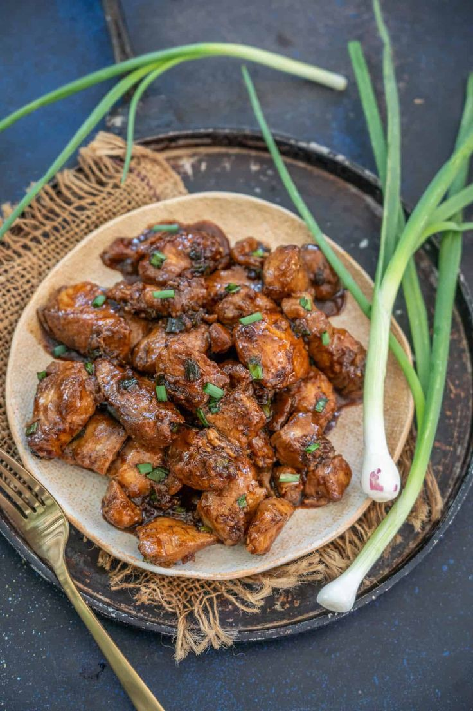
Honey Garlic Fish
- Honey Garlic Fish is a flavorful dish made using fish fillets and a delicious combination of honey,
soy sauce, and garlic.
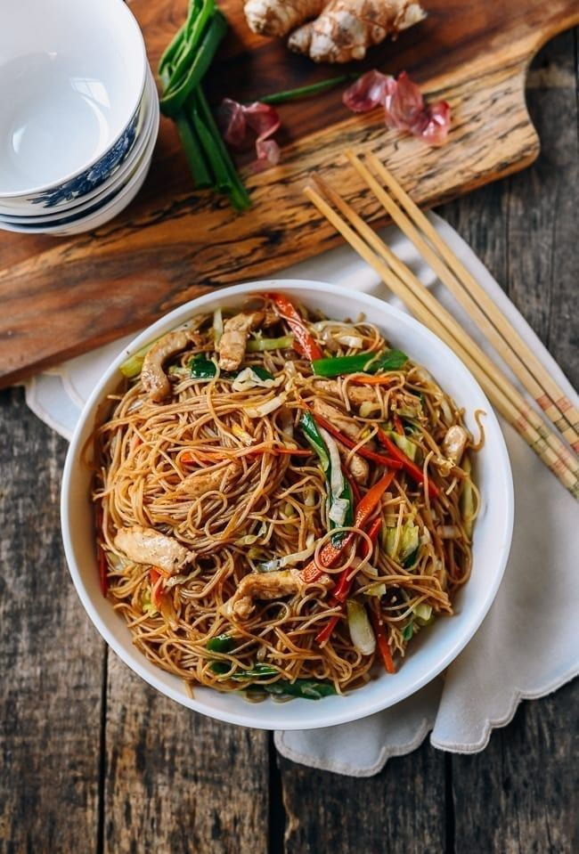
soy sauce, and garlic.
Chicken Mei Fun Noodles
- Chicken Mei Fun Noodles is an Asian stir-fry made with rice noodles, sauces, veggies, and boneless chicken.
DESSERTS
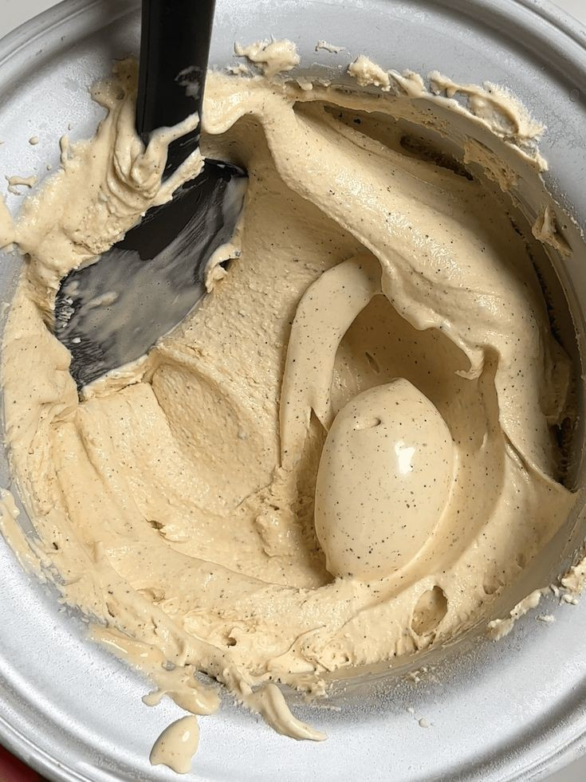
OREOLUWA
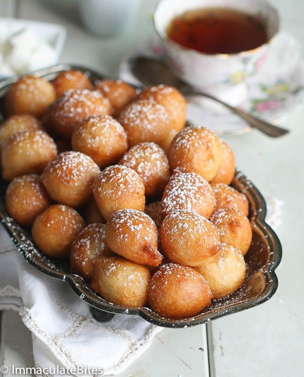
Puff-Puff
Read More
- Puff-puff is a very popular Nigerian dessert in Nigeria that can also be eaten as a snack.
When in smaller sizes, it is mainly used for “small chops” on Nigerian special occasions.
It’s made by spicing batter, especially with diced fresh pepper, before deep-frying in vegetable oil.
This enjoyable dessert is also served in other parts of Africa, though with slight regional variations.
When in smaller sizes, it is mainly used for “small chops” on Nigerian special occasions.
It’s made by spicing batter, especially with diced fresh pepper, before deep-frying in vegetable oil.
This enjoyable dessert is also served in other parts of Africa, though with slight regional variations.
Boiled or Roasted Maize & Coconut
Read More
- The maize can be prepared by boiling or roasting, depending on individual preference.
Some people also combine the maize with small pears, a tasty combination that’s also packed with fiber.
Some people also combine the maize with small pears, a tasty combination that’s also packed with fiber.
Ice-cream
Read More
- Our vanilla ice cream recipe is perfect for those who have never made ice cream in their life,
as well as ice cream aficionados looking for a go-to, tried-and-true recipe to keep in their back pocket.
as well as ice cream aficionados looking for a go-to, tried-and-true recipe to keep in their back pocket.